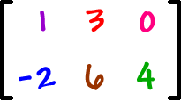

Para efeitos da nota atribuida à resolução de exercícios ao longo do semestre - Submeter até 23:59 de 13 Novembro
(o problema continuará depois disponível para submissão, mas sem contar para a nota)
[para perceber o contexto do problema deve ler o guião da aula #03]
Neste problema deverá apenas submeter uma classe Matrix (e não um programa completo).
A sua tarefa é criar uma classe Matrix para representar uma Matriz. Deverá começar por usar a seguinte classe:
import java.util.Scanner; class Matrix { int data[][]; // os elementos da matriz em si int rows; // numero de linhas int cols; // numero de colunas // construtor padrao de matriz Matrix(int r, int c) { data = new int[r][c]; rows = r; cols = c; } // Ler os rows x cols elementos da matriz public void read(Scanner in) { for (int i=0; i<rows; i++) for (int j=0; j<cols; j++) data[i][j] = in.nextInt(); } // Representacao em String da matriz public String toString() { String ans = ""; for (int i=0; i<rows; i++) { for (int j=0; j<cols; j++) ans += data[i][j] + " "; ans += "\n"; } return ans; } }
Deverá acrescentar os seguintes métodos à classe:
Um exemplo de utilização seria:
import java.util.Scanner; class TestMatrix { public static void main(String[] args) { Scanner stdin = new Scanner(System.in); Matrix m1 = Matrix.identity(5); System.out.println(m1); Matrix m2 = new Matrix(stdin.nextInt(), stdin.nextInt()); m2.read(stdin); System.out.println(m2); Matrix m3 = new Matrix(stdin.nextInt(), stdin.nextInt()); m3.read(stdin); System.out.println(m3); Matrix m4 = new Matrix(stdin.nextInt(), stdin.nextInt()); m4.read(stdin); System.out.println(m4); Matrix m5 = m1.transpose(); System.out.println(m5); Matrix m6 = m2.transpose(); System.out.println(m6); Matrix m7 = m2.sum(m3); System.out.println(m7); Matrix m8 = m2.multiply(m4); System.out.println(m8); } }
Se o programa anterior for alimentado com o input:
3 5 1 2 3 4 5 6 7 8 9 10 11 12 13 14 15 3 5 6 7 8 9 10 1 2 3 4 5 11 12 13 14 15 5 4 1 2 2 1 3 4 4 3 5 6 6 5 7 8 8 7 9 10 10 9 |
Deverá produzir o output:
1 0 0 0 0
0 1 0 0 0
0 0 1 0 0
0 0 0 1 0
0 0 0 0 1
1 2 3 4 5
6 7 8 9 10
11 12 13 14 15
6 7 8 9 10
1 2 3 4 5
11 12 13 14 15
1 2 2 1
3 4 4 3
5 6 6 5
7 8 8 7
9 10 10 9
1 0 0 0 0
0 1 0 0 0
0 0 1 0 0
0 0 0 1 0
0 0 0 0 1
1 6 11
2 7 12
3 8 13
4 9 14
5 10 15
7 9 11 13 15
7 9 11 13 15
22 24 26 28 30
95 110 110 95
220 260 260 220
345 410 410 345
|
Deverá apenas submeter a classe Matrix. O Mooshak irá chamar criar várias instâncias da sua classe usando o construtores definido e irá fazer uma série de testes aos métodos por si implementados (como mostrado no exemplo de utilização).
É garantido que os métodos são chamados de forma correcta (os argumentos fazem sentido e não geram excepções).
Estruturas de Dados (CC1007)
DCC/FCUP - Faculdade de Ciências da Universidade do Porto